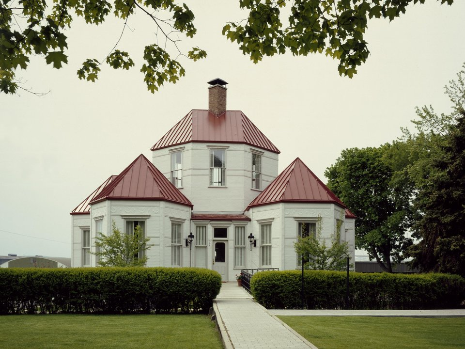

Petoskey · Since 1899
Hotel Perry
Petoskey’s historic hotel, near the Gaslight District.
Official details for Hotel PerryLittle Traverse Bay and the Tunnel of Trees.
Harbor Springs and Petoskey face each other across Little Traverse Bay, two classic northern Michigan resort towns. Stay in the 1899 Hotel Perry, drive the Tunnel of Trees along the bluffs to Legs Inn, hunt for Petoskey stones on the beach and watch the sunset over the bay.

Time illustration: direct distance at 150 KTAS plus 15 minutes for departure and arrival, matching the discovery page. Use ForeFlight for your actual flight plan.
KMGN, Harbor Springs Airport, is a non-towered field a few minutes from town. Pellston (KPLN), with airline service, is about 20 minutes north.
Harbor Springs Airport, Harbor Springs, MI
Confirm FBO hours, fees and ground transportation. No live fuel price is shown.
Great Lakes weather: lake-effect clouds and snow from late fall through winter, summer thunderstorms and fog over cold water in spring. About 760 nm from Myrtle Beach: plan a fuel stop and three nights.
Rates and availability need travel dates. Summer books early.
Petoskey’s historic hotel, near the Gaslight District.
Official details for Hotel PerryA ski and golf resort in the hills above the bay.
Official details for The HighlandsB&Bs and cottages.
Petoskey Area for Harbor Springs innsPrices and availability for your dates, through our partner Stay22. This is an affiliate link: we may earn a commission at no cost to you. The picks above are never paid.
Reserve weekend dinners.
Polish cooking in a stone-and-driftwood lodge at the end of the Tunnel of Trees.
Official details for Legs InnA classic Harbor Springs dinner spot.
Website & map for The New York RestaurantA Petoskey bistro with bay views.
Website & map for Palette BistroSlow summer days.
This prototype links to the local visitor site. It does not yet match events to your travel dates.
Sailing and beach days.
Petoskey Area for Lake seasonThe Tunnel of Trees at its peak.
Skiing at The Highlands and Boyne.
Check the local calendar when choosing a weekend, and confirm dates and tickets with the organizer.
A sample long weekend: the bay, the tunnel and Legs Inn. Plan three nights for the flight. No bookings or availability confirmed.
Land at KMGN early.
Walk Harbor Springs.
Drive the Tunnel of Trees, then back to the airport.
Land at KMGN, subject to weather, your fuel stop and your actual flight plan.
Walk Harbor Springs.
Dinner at The New York Restaurant.
Drive the Tunnel of Trees.
Lunch at Legs Inn, then Petoskey State Park.
Dinner in Petoskey.
The Gaslight District.
Allow time at the airport.
Lake-effect weather can build quickly; leave early.
Drive the Tunnel of Trees.
Lunch at Legs Inn, then Petoskey State Park.
Dinner in Petoskey.
These details make the difference between an appealing list and a usable getaway.
Lodging first.
About 760 nm. Plan a fuel stop and three nights.
Many places are summer-focused.
June to October.
Picks and links reviewed by WingAway Weekends. Hours, prices, menus and availability change often, so confirm directly with each place before booking. Spotted something out of date, or have a favorite we missed? Email us at hello@wingawayweekends.com.
WingAway Weekends helps you discover the destination. Use ForeFlight and current official aviation information for route, performance, weather, NOTAMs and preflight decisions. Flight planning and PIC responsibility stay with the pilot.